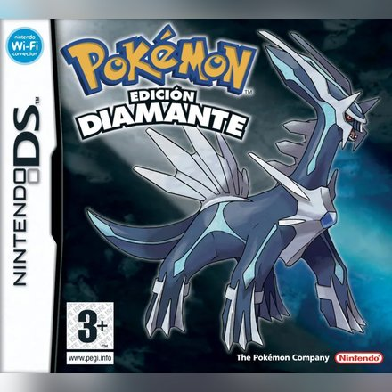
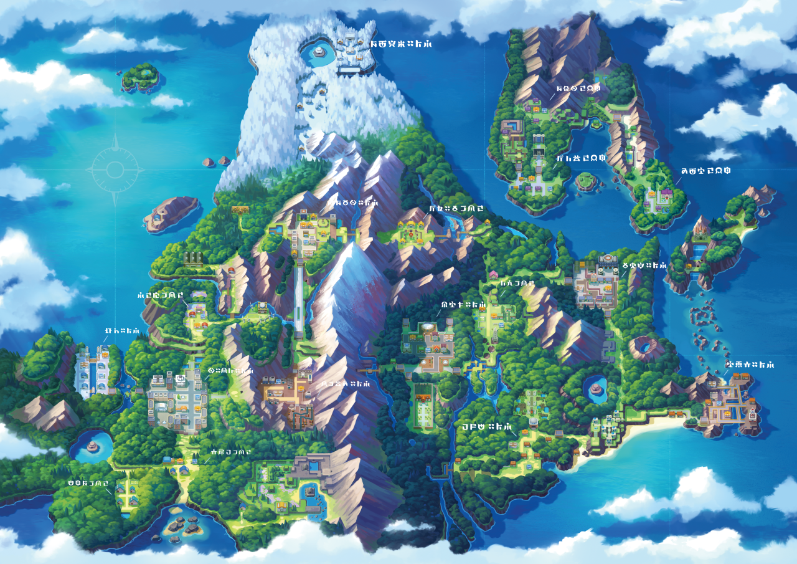
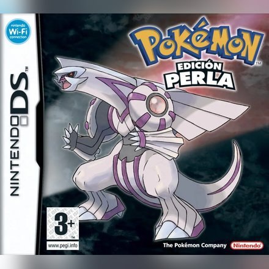
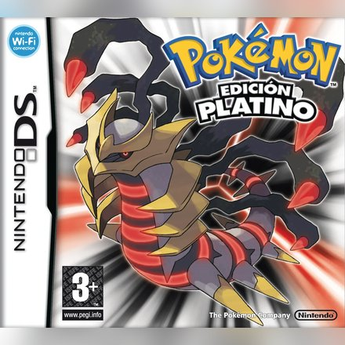
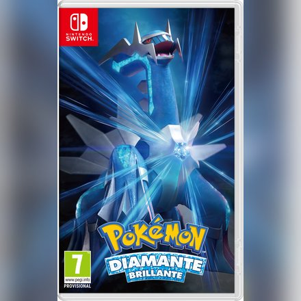
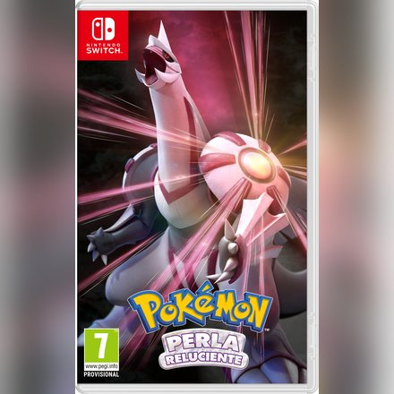
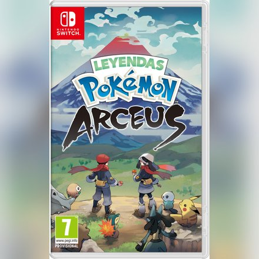
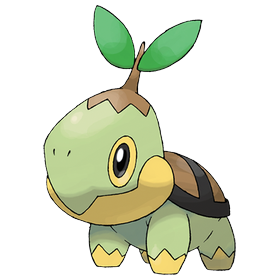
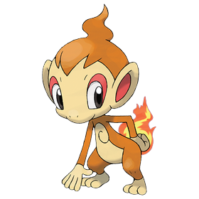
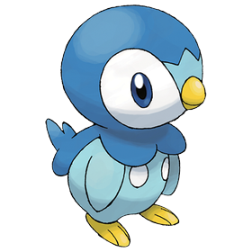

Pokémon Diamante
Nintendo DS · 2006
Región de Sinnoh · Diamante y Perla (2006)
Aquí va la introducción a la región de Sinnoh: dónde está, cómo es y qué la hace especial.
Aquí puedes contar la historia de la región: su pasado, sus leyendas, sus villanos, la Liga Pokémon...
Y aquí lo que vive el protagonista: sale de su pueblo, recibe su primer Pokémon de el Profesor Serbal y empieza su viaje.


Nintendo DS · 2006

Nintendo DS · 2006

Nintendo DS · 2008

Nintendo Switch · 2021

Nintendo Switch · 2021

Nintendo Switch · 2022


